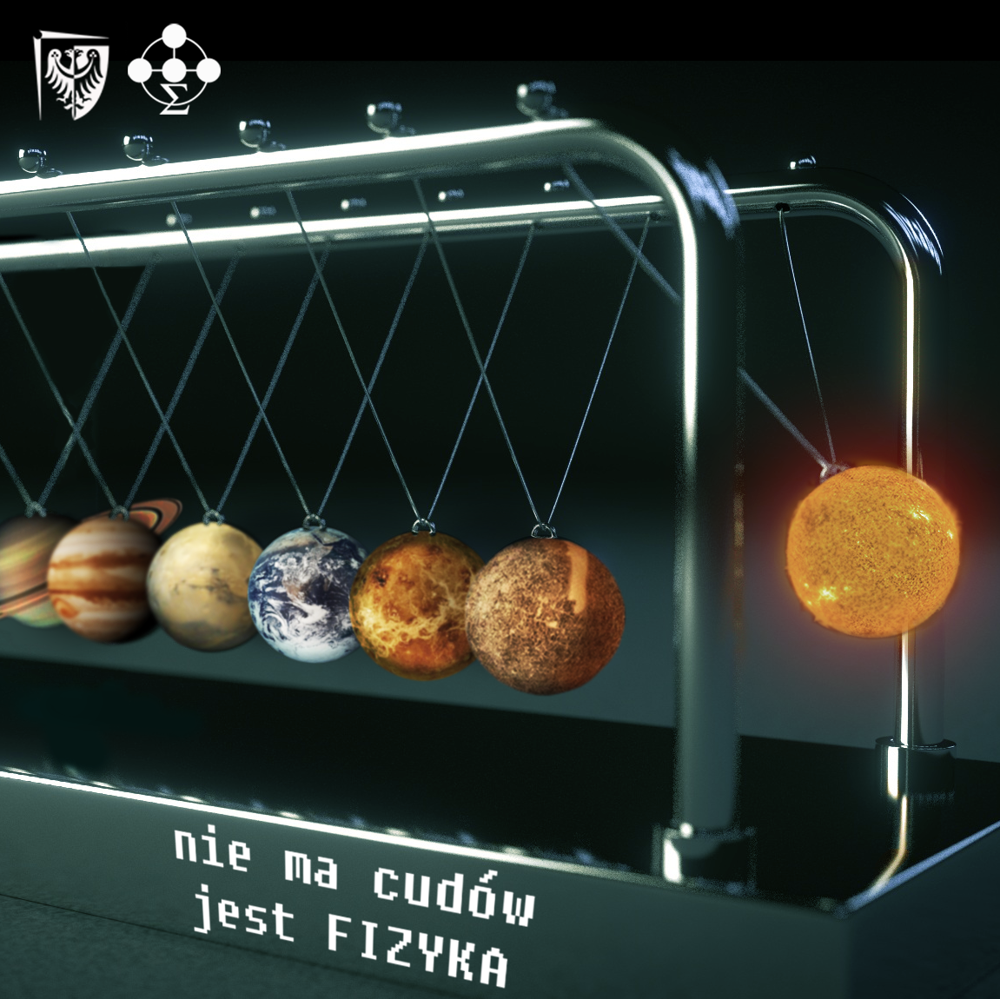

Faculty of Fundamental Problems of Technology Instagram advertising
/ Graphics /
Faculty of Fundamental Problems of Technology of Wrocław University of Science and Technology launched an Instagram to advertise physics and the faculty among young students. The objective was to create a set of graphics that would catch attention of potential followers by using themes associated with physics.
Deliverable
A set of graphics to be published on social media
Role
Designer
